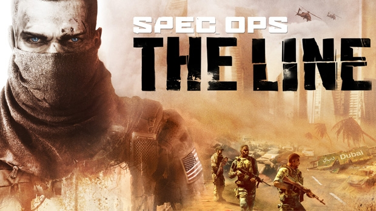

SPEC OPS: THE LINE
El juego de los crimenes de guerra Spec Ops: The Line es un shooter (Juego de disparos) en 3º persona desarrollado por Yager Development y publicado por 2kGames. El juego fue lanzado para OS X, Windows, Linux, Xbox 360 y PlayStation3. La historia del juego se basa en controlar al personaje del Capitán Martin Walker quien está acompañado por su equipo de Delta Force en una misión en Dubai donde tu objetivo es rescatar al coronel John Konrad, desaparecido en Dubái tras desobedecer la orden de abandonar la ciudad antes de que unas enormes tormentas de arena la borrasen del mapa.
~~ALERTA SPOILER~~ Lo que más resalta de este juego es que juzga al jugador todo el tiempo, a algunos les gusta este planteamiento pero no a todos. Por una parte es lo que lo hace diferenciarse de los otros juegos de disparos, aqui no te vamos a dar medallitas. Lo mas frustrante es que el juego te da la falsa esperanza de elegir por ejemplo: El juego te da a elegir si salvar o no a alguien, resulta que si decides salvarlo acaba muriendo igual, y es justo eso lo que a mucha gente le disgusta.
Por otro lado es cierto que es bastante innovador a la hora de hacer un ataque químico y luego pases por al lado de los cadaveres de los niños que has matado como para decirte: Ves todo esto, es culpa tuya. A diferencia con muchos shooter, Spec Ops:The line no te reconforta positivamente y te fuerza a que te identifiques con el protagonista, cuya estabilidad mental va menguando conforma avanza la trama, al final no sabe ni a quien esta matando ni porque o por quien, cuando se supone que era una simple mision de rescate de civiles y acaban muriendo mas de los que salvas.
(adjuntar video de joseju)
Enlace a un video que lo explica muy bien

COD : Black Ops III
Esta conocida saga de juegos de disparos (Shooters) en primera persona desarrollado por Treyarch, Beenox y Mercenary Technology, publicado por Activision. Es la 12º entrega de la saga Call Of Duty y la 3º de la saga Black Ops. Fue lanzado el 6 de Noviembre de 2015. Disponible para PS4, Xbox One, PC, PS3 y Xbox 360. Es la última entrega de Call of duty disponible para las consolas de la pasada generación (PS3 y Xbox 360)
Esta entrega continúa la historia unos 40 años despues de la ultima entrega (COD BO2). El mundo tiene lugar en un futuro distópico situado en 2065, donde la ciencia y la tecnologia han cambiado radicalmente a la especie humana, con sociedad violenta y protestas e intentos de detener el progreso de la tecnologia. La tecnología militar ha avanzado tanto hasta el punto de que la robótica juega un papel muy importante y se han desarrollado super-soldados. Hay muchas especulaciones sobre algun tipo de adquisición por robots y plantea la pregunta: ¿Hasta donde podremos usar la tecnologia antes de que se vuelva en nuestra contra?
Como se menciona el uso de trajes roboticos para hacer super-soldados, tanto en modo campaña como en multijugador veremos aumentadas las habilidades de sprint, armadura salgo y fatiga en los protagonistas. Además en el modo online los jugadores cuentan con una habilidad final que puede ser decisiva para la partida dependiendo del especialista que juguemos y si lo sabemos usar bien.
Counter Strike: Global Offensive
Counter-Strike: Global Offensive(CS:GO) es un juego de disparos en primera persona desarrolado por Valve Corporation y el cuarto de la saga Counter-Strike. Fue lanzado como beta en 2012 y actualemente esta disponible para Windows, Mac, Linux, SteamOS, Xbox360, PS3, Xbox One. Aunque el juego tenga ya algunos años, todos los años actualizan mapas modos de juego, mecanicas, bugs, estadisticas de armas...etc.
Actualmente es un juego gratuito, gracias a esto su base de jugadores aumentó de 20 a 40 milloes, haciendo retomar su puesto dentro de los juegos más jugados en los ultimos 10 años.S¡ Según los desarrolladores, el juego cuena con la misma mecánica que sus antecesores aunque cuenta con algunos nuevos modos de juego, y todos los jugadores estan al mismo nivel, lo único que los diferencia es su habilidad, no como en otros shooter comos Call of Duty que hay que subir de nivel para desbloquear algunas armas o rachas de bajas (en CSGO no hay rachas).
El juego consta de las siguientes fases en el modo competitivo (El más jugado). Al principio de cada ronda tienes un dinero, que va aumentando dependiendo de si tu equipo gana o pierde y de los jugadores que hayas eliminado en la ronda anterior (El dinero se guarda entre ronda y ronda pudiendo ahorrar algunas rondas para tener mas dinero en la siguiente). Como opciones para comprar tenemos todo tipo de armas principales, pistolas, granadas, chaleco antibalas y kit de defuse (Sirve para desactivar la bomba más rapido). ¿Cómo se juega?, pues bien hay dos equipos, uno es el equipo terrorista y el otro el antiterrorista, Los “malos” tiene que poner la bomba y que explote para ganar o en su defecto eliminar a todo el equipo contrario. Por otro lado los “buenos” tienen que impedir que se plante la bomba/desactivarla o matar al equipo enemigo para ganar. Si los buenos son capaces de matar a todos los terroristas pero no consiguen desactivar la bomba a tiempo pierden igualmente. Este modo de juego gana al mejor de 16 (con diferencia de 1), si no es así habrá una prorroga hasta el primero que saque 2 rondas de ventaja.